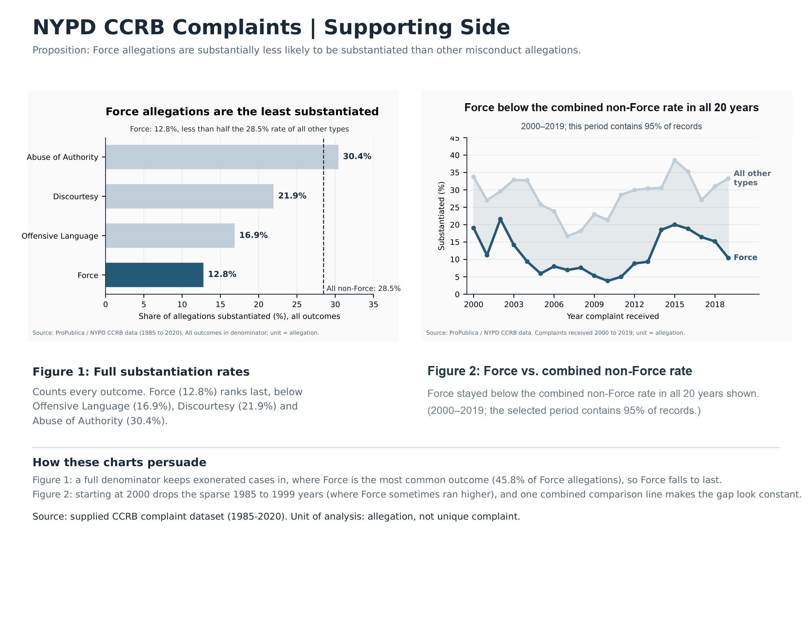
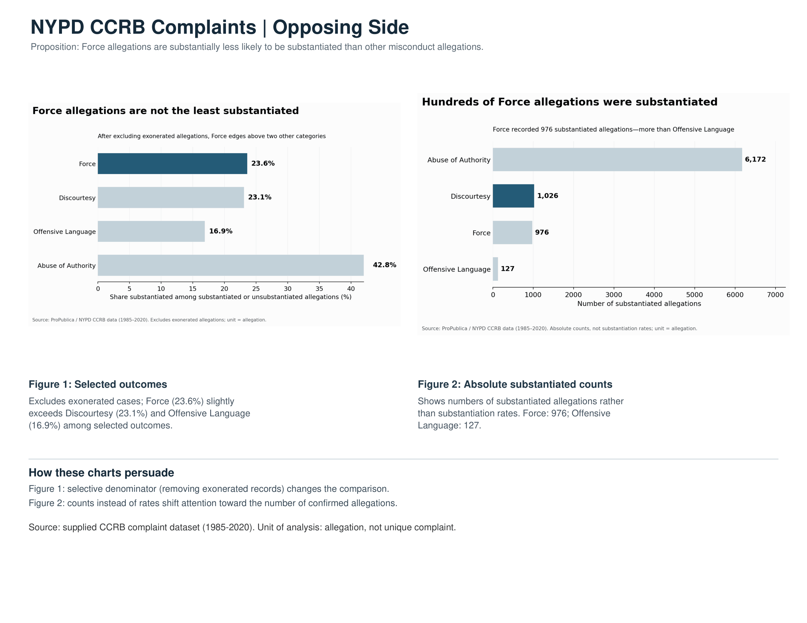

Proposition: Force allegations are substantially less likely to be substantiated than other types of police misconduct allegations.
FOR the Proposition

Design Decisions and Rationale:
- RATIONALE_1
- RATIONALE_2
- RATIONALE_3
AGAINST the Proposition

Design Decisions and Rationale:
- RATIONALE_1
- RATIONALE_2
- RATIONALE_3
Final Reflection
This project showed us that persuasive and deceptive visualizations do not necessarily depend on changing the underlying numbers. Instead, choices about filtering, denominators, aggregation, color, titles, and whether to display counts or percentages can substantially change the story a reader takes away from the same dataset. On the supporting side, the strongest technique was using the full substantiation rate, which directly matched the proposition and showed Force at 12.8%, below the other categories. Other choices, such as emphasizing Force with a darker color and grouping the remaining categories together, made the argument more persuasive while still preserving the core comparison.
The opposing side required more aggressive framing. Removing exonerated cases raised the Force rate to 23.6%, while switching from rates to absolute counts emphasized the 976 substantiated Force allegations. These values are technically correct, but they answer a somewhat different question from the proposition and can lead the reader toward a different interpretation.
The main lesson I learned is that a visualization can be technically accurate while still being misleading. The most important ethical issue is not only whether the numbers are correct, but whether the visual and statistical choices fairly represent the question being asked. I found the supporting side more trustworthy because it uses the full dataset and a metric that directly corresponds to the proposition, while the opposing side demonstrates how selective framing can create a persuasive alternative story.